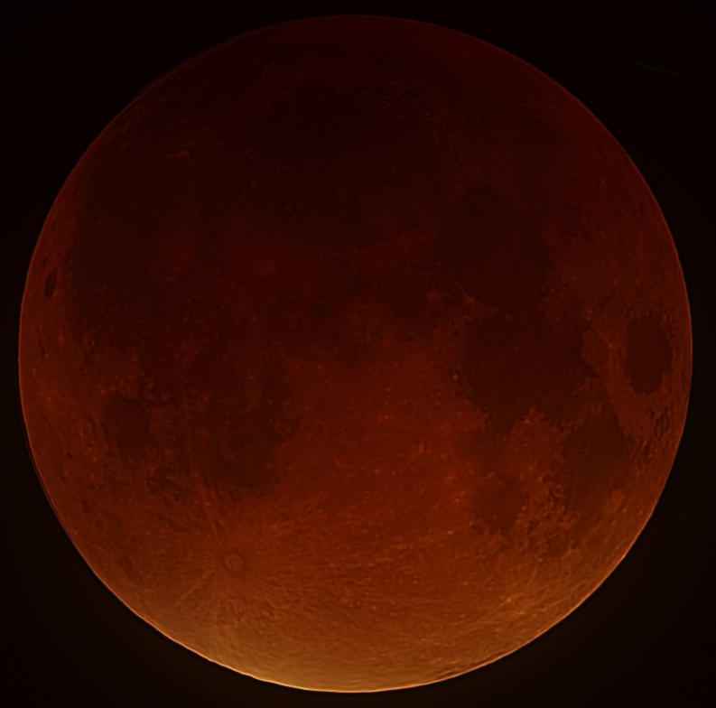
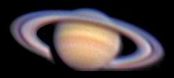
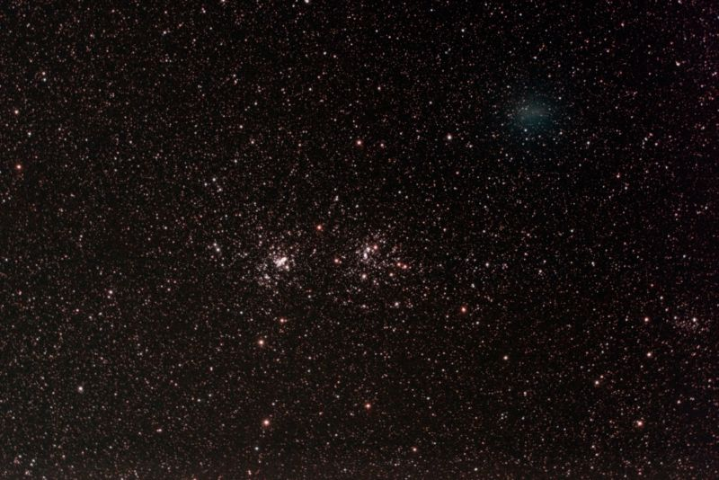
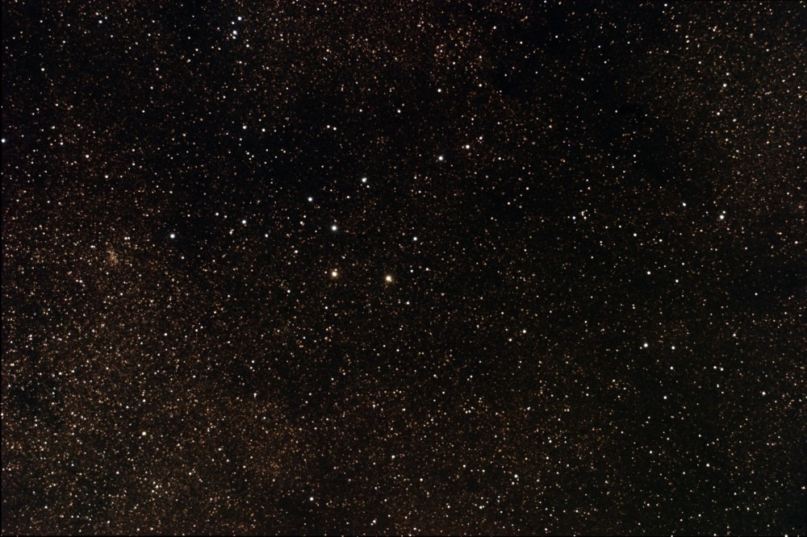

Hi, Welcome to the Star Club!
Main Page

| Object Name | moon |
| obect category | Earth System |
| description | Max Eclipse |
| photographer | Rob Kantelberg |
| location | |
| date | 28 Sep 2015 |
| Equipment | Canon 600D |
| tag |

| Object Name | Jupiter |
| obect category | Sun System |
| description | |
| photographer | Rob Kantelberg |
| location | |
| date | Feb 2,2012 |
| Equipment | Newton telescope |
| tag | Exposure 1/25sec |

| Object Name | Saturn |
| obect category | Sun System |
| description | |
| photographer | |
| location | |
| date | April 8, 2006 |
| Equipment | Newton telescope |
| tag | Distance 9.1285AU |

| Object Name | 103P/Hartley |
| obect category | Comet |
| description | in Perseus nearby |
| photographer | |
| location | |
| date | Oct 8 2010 |
| Equipment | |
| tag | magnitude 5 |

| Object Name | Asterism |
| obect category | cluster |
| description | vL,B incl 4,5,7 Vulp |
| photographer | |
| location | |
| date | July 26, 2009 |
| Equipment | Canon 10D |
| tag | Local light pollution |
| Object Name | Mizar & Alcor |
| obect category | Doublestars |
| description | 250mm F/10 |
| photographer | |
| location | |
| date | March 19, 2009 |
| Equipment | Canon 10D |
| tag | Local light pollution |
| Object Name | M29 |
| obect category | Galactic Star Cluster |
| description | Cl, P, IC, st L and S |
| photographer | |
| location | |
| date | Oct 9, 2009 |
| Equipment | Canon 10D |
| tag | Local light pollution |

| Object Name | M25 |
| obect category | Globular Cluster |
| description | !!,vB,L,eCM,eRi,st mags 11... |
| photographer | |
| location | |
| date | June 10, 2008 |
| Equipment | Canon 10D |
| tag | Local light pollution |
| Object Name | IC1396 |
| obect category | Elephant's Trunk nebula |
| description | |
| photographer | |
| location | |
| date | Sep 11, 2014 |
| Equipment | Nikkor 300mm |
| tag | Filter: Baader Ha |